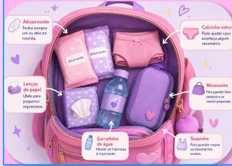

Meu Ciclo Menstrual
Observações & Sintomas
Próxima Consulta Médica
Guia Prático do Dia a Dia

Clique para ver em tela cheia
O que levar no Kit Bolsa?
- 2 a 3 absorventes de reserva.
- Uma calcinha limpa extra.
- Lenços umedecidos sem perfume.
- Um saquinho plástico discreto para emergências.

Clique para ver em tela cheia
Como descartar e quando trocar?
Troque o absorvente a cada 3 a 4 horas.
- Enrole no papel higiênico ou embalagem.
- Nunca jogue no vaso sanitário!
- Descarte sempre no lixo do banheiro.
Tipos de Proteção: Qual escolher?
Prevenção, Anticoncepção & Mitos

Clique para ver a imagem completa
Mitos, Verdades & Dúvidas Frequentes
A primeira menstruação traz muitas incertezas. Abaixo reunimos as respostas para as perguntas mais comuns para que você passe por essa fase com total segurança!
Em média de 3 a 7 dias. Nos primeiros anos, é super normal o ciclo ser desregulado.
Nem sempre. Cólicas leves são normais, mas dores muito fortes precisam de avaliação médica.
Com certeza! Isso é um mito antigo. Banho morno ajuda até a aliviar a cólica.
Sim! Exercícios leves liberam endorfina, diminuindo o desconforto e melhorando o humor.
Preservativos, Anticoncepcionais & Dupla Proteção
Para uma vida sexual segura, o conceito ideal é a Dupla Proteção: combinar um anticoncepcional com o preservativo.
Camisinha
Único método que protege contra ISTs e gravidez ao mesmo tempo. Grátis no SUS.
Anticoncepcionais
Pílulas, DIU, injeções e implantes. Devem ser indicados por um médico para o seu perfil.
Emergência
A Pílula do Dia Seguinte serve apenas para imprevistos (camisinha estourou). Usar até 72h.
Atenção: Quando procurar um médico? (Sinais de Alerta)
- Cólicas intensas que não melhoram com remédio comum.
- Sangramento excessivo (troca de absorvente a cada 1 hora por várias horas).
- Menstruação que dura mais de 8 a 10 dias seguidos.
- Tonturas, palidez excessiva ou desmaios durante o ciclo.
Direitos e Acesso Gratuito no SUS
Você não precisa pagar para se cuidar! Nas Unidades Básicas de Saúde (Postos de Saúde) do SUS você encontra de graça:
- Preservativos masculinos e femininos: Retirada livre na recepção.
- Exames Rápidos: Testes gratuitos e confidenciais para HIV, Sífilis e Hepatites (resultado em 15 minutos).
- Consultas e Métodos Anticoncepcionais: Pílulas e inserção de DIU gratuitos pelo posto.